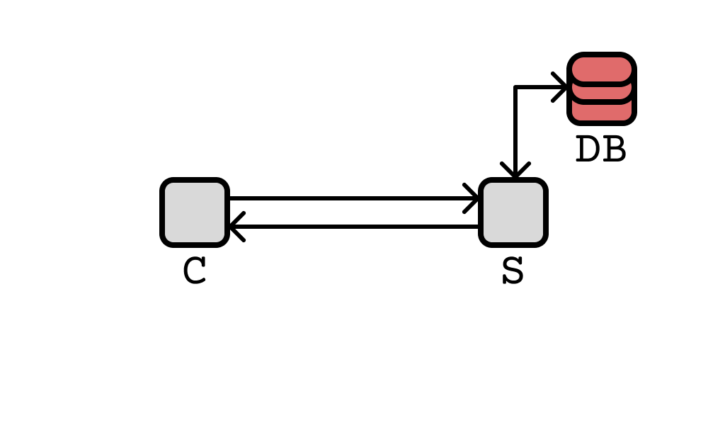
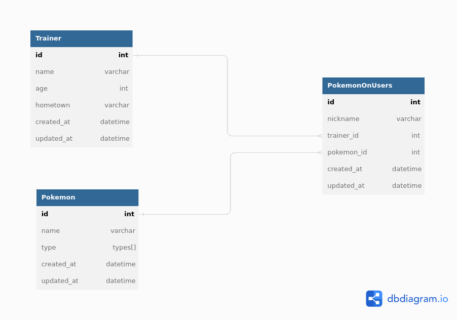

1. Introdução
Este relatório tem como objetivo apresentar o trabalho prático
realizado para a disciplina Gerenciamento de Redes de Computadores,
ministrada pelo professor Elias P. Duarte Jr. no semestre 2022/2.
O trabalho consiste em impementar uma aplicação cliente/servidor
baseada em KVS utilizando mecanismos de comunicação segura de forma a
garantir sigilo, autenticidade e integridade. Além disso, também era
necessário manter uma pequena base de dados e permitir operações de
inserção, update, deleção e criação em cima dela.
2. Implementação
De início, gostaríamos de ressaltar que utilizamos um banco de dados
relacional (PSQL) ao invés de um sistema KVS como Mongo ou Redis.
A escolha foi tomada devido a familiariade da dupla com esse tipo de
banco de dados e devido ao curto tempo para a entrega do trabalho.
Para a aplicação cliente/servidor, com o intuito de manter os
requisitos exigidos, utilizamos os protocolos SSL/TLS para realizar
comunicação segura com os sockets. O cliente e o servidor em si foram
implementados em python e a conexão com o banco de dados PSQL fui
feita através do Prisma (um ORM - object relational mapper - que
aceita PSQL e facilita o desenvolvimento). No geral, temos a seguinte
estrutura:

Apenas o servidor comunica com o banco de dados, ao passo que o
cliente apenas se comunica com o servidor. A base de dados utilizada é
simples e baseada em pokemon, com as seguintes tabelas:

O servidor expõe uma API TCP que permite ao cliente realizar as
operações de CRUD em cima da tabela de Treinadores. O crud das outras
tabelas ainda não foram implementadas de maneira a garantir
simplicidade e foco no trabalho. Os comandos disponíveis são:
getAllTrainers: retorna todos os treinadores
getTrainer id: retorna um treinador específico, dado seu id
createTrainer: cria um treinador, dado seu nome, idade e hometown
updateTrainer id: da update nos dados de um treinador, dado seu id
deleteTrainer id: deleta um treinador, dado seu id
exit: encerra a conexão com o servidor e finaliza o cliente
help: mostra os comandos disponíveis e uma breve descrição de cada um